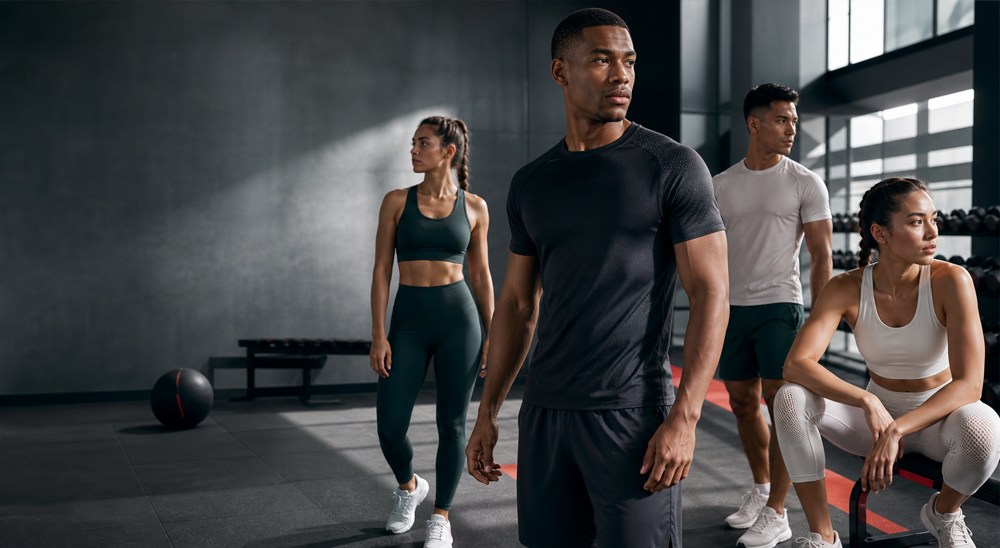

Sports & gym wear engineered for motion
Altor
Built with top notch fabric and breathable quality, Altor creates training gear that stays sharp through heavy lifts, long runs, and everything in between.
New season essentials
Made for sweat, speed, and shape.
Core training
AeroFlex Tank
Lightweight mesh zones with a smooth athletic drape.
Compression
StrideLock Tights
Supportive stretch fabric that holds form through every rep.
Warm-up
PulseLite Hoodie
Breathable warmth for early starts and cool-down walks.
Fabric standard
Performance feel without the plastic shine.
Altor pairs top notch fabric and breathable quality with soft compression, quick dry finishes, and smooth seams that stay out of your way.
Air-channel knit
Micro-vent texture moves heat away from the skin during high-output sessions.
Shape retention
Stretch recovery keeps tees, tights, and layers looking clean after repeat wear.
Soft grip finish
Matte handfeel with secure movement, built for gym floors and city streets.
Train harder. Breathe better. Wear Altor.
Join early access